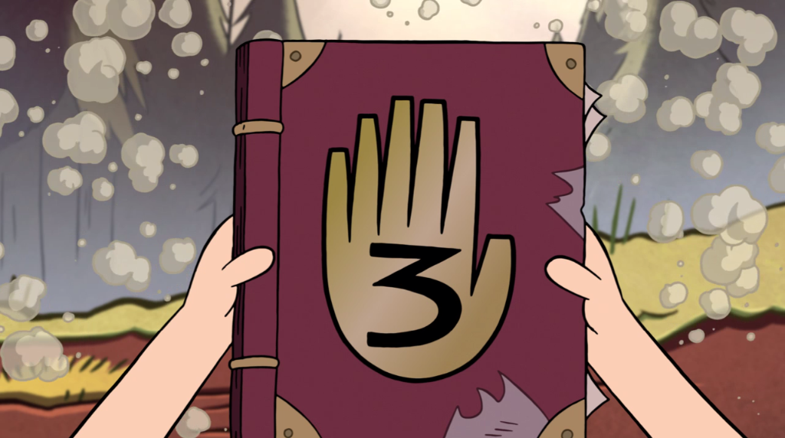
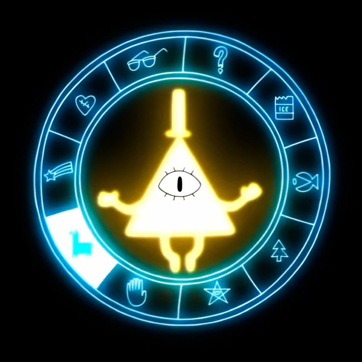
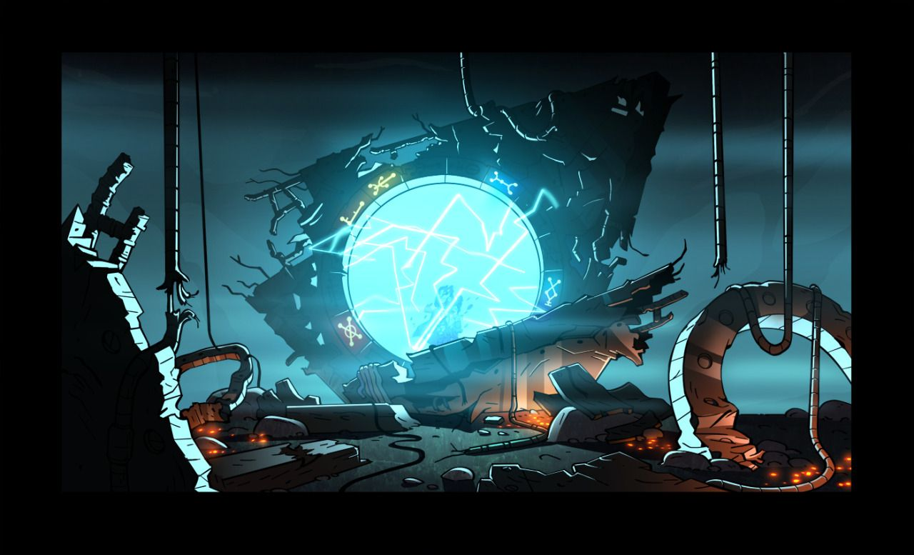

Дневник №3
Самая важная книга в Гравити Фолз. В ней записаны все аномалии, существа и коды. Будь осторожен, читая её страницы — некоторые знания могут быть опасны.
Тайны маленького городка
Здесь хранятся самые темные секреты городка. Не читай это после полуночи.

Самая важная книга в Гравити Фолз. В ней записаны все аномалии, существа и коды. Будь осторожен, читая её страницы — некоторые знания могут быть опасны.

Странные знаки, которые появляются по всему городу. Они складываются в послания, которые может расшифровать только тот, кто знает язык демонов.

Устройство, созданное Фордом Пайнсом. Оно способно соединять разные измерения. Его активация чуть не уничтожила весь город.
Расшифруй послание, если осмелишься...